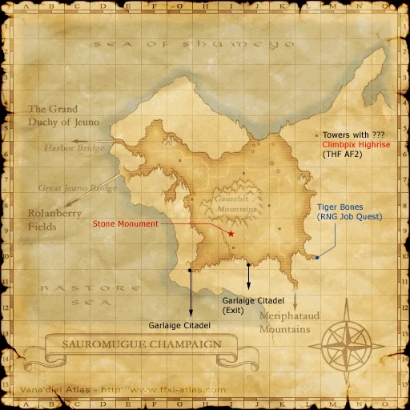
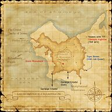

Description
Sauromugue Champaign is an outdoor area in Aragoneu.
Map

Involved in Quests / Missions
| Quest / Mission | Type | Starter | Location |
|---|---|---|---|
| An Explorer's Footsteps | Map | Abelard | Selbina (pos=G-9) |
| As Thick as Thieves | Thief AF 2 | Nanaa Mihgo | Windurst Woods (pos=J-3) |
| Fistful of Fury | General | Vola | Lower Jeuno (pos=J-8) |
| The Fanged One | Job: Ranger | Perih Vashai | Windurst Woods (pos=K-7) |
NPCs
- Atmacite Refiner
- Burrow Researcher
- Neriss
- Utrig
- Voidwatch Officer
- Vrednev
Notorious Monsters
| Name | Level | Drops | Steal | Family | Spawns | Notes |
|---|---|---|---|---|---|---|
| Deadly Dodo | 39-40 | Cockatrice Meat Cockatrice Skin Dodo Skin Giant Bird Feather | Giant Bird Feather |  CockatriceImage source CockatriceImage source | — | Respawn: 1 hr; A, S |
| Roc | 55 | Crimson Blade Damascus Ingot Dryad Staff Reraiser Vile Elixir | — |  RocsImage source RocsImage source | — | Respawn: 21-24 hr; A, S |
Regular Monsters


Event Monsters
| Name | Level | Drops | Steal | Family | Spawns | Notes |
|---|---|---|---|---|---|---|
| Climbpix Highrise | 55 | Grapnel | — |  GoblinsImage source GoblinsImage source | 1 | Spawned: As Thick as Thieves; A, L, S |
| Old Sabertooth | 20 | — | — |  TigersImage source TigersImage source | 1; Respawn: 5 min | Spawned: The Fanged One; A, L, S |
Story walkthroughs in this area
| Story | Mission / quest |
|---|---|
| WotG 1 | Cavernous Maws |
| WotG 40 | Edge of Existence |
| ACP 3 | Gatherer of Light (I) |
References
External references describe their own server or retail rules. Documented Zenith changes take precedence.
Map credits: Map 1 — HorizonXI Wiki. Original game maps © SQUARE ENIX; redrawn maps retain the credited authorship and license.

Supplemental NPC names and exits are from the base-world snapshot; expansion conditions can affect availability.
Additional level-75 reference


These windswept, desolate plains are situated on an arid peninsula that juts out into the Bastore Sea. Located near the Strait of Jeuno, this area is considered a gateway between the Mindartia and Quon continents. Due to this prime location, numerous kingdoms and various beastman forces have struggled for control of the terrain. The struggle continues to this day--even with the advent of the airship and its revolutionary impact on travel.
Connecting Areas
- Port Jeuno: E-6
- Meriphataud Mountains: K-11
- Rolanberry Fields: E-7
- Garlaige Citadel: J-10 (only by exiting Garlaige), G-11
|}
Involved in Quests/Missions
|
Quest |
Type |
Starter |
Location |
|
Selbina G-9 | |||
|
General |
Lower Jeuno J-8 | ||
|
Ranger Flag |
Windurst Woods K-7 | ||
|
Windurst Woods J-3 |


Notorious Monsters Found Here
|
Name |
Level |
Drops |
Steal |
Family |
Spawns |
Notes | |||||||
|
55 |
1 |
A, L, S | ||||||||||
|
39-40 |
1 |
A, S | ||||||||||
|
55 |
1 |
A, S | |||||||||||
|
HP = Detects Low HP; M = Detects Magic; Sc = Follows by Scent; T(S) = True-sight; T(H) = True-hearing JA = Detects job abilities; WS = Detects weaponskills; Z(D) = Asleep in Daytime; Z(N) = Asleep at Nighttime | |||||||||||||
Mobs Found Here

|
Name |
Level |
Drops |
Steal |
Family |
Spawns |
Notes | |||||||
Big Jaw
|
20-23 | Pugil | Fished up | A, H | |||||||||
| Champaign Coeurl | 30-34 | Coeurl | 5 Respawn: 5 min |
A, S, Sc | |||||||||
Cutter
|
28-30 | Crab | Fished up | A, H | |||||||||
| Diving Beetle | 25-28 | Beetle | 17 Respawn: 5 min |
L, S, Sc | |||||||||
Earth Elemental
|
38-40 | Elemental | 3 | M | |||||||||
Thunder Elemental
|
38-40 | Elemental | 3 | M | |||||||||
Evil Spirit
|
35-38 | Ghost | 19 |
A, H, HP | |||||||||
| Evil Weapon | 36-38 | Evil Weapon | 10 Respawn: 5 min |
A, H, M | |||||||||
| Goblin Bounty Hunter | Goblin | Respawn: ?? min |
A, L, T(S) | ||||||||||
| Goblin Digger | 28-32 | Goblin | 1 Respawn: 5 min |
A, L, S | |||||||||
| Goblin Furrier | 30-36 | Goblin | 8 Respawn: 5 min |
A, L, S | |||||||||
| Goblin Gambler | 26-30 | Goblin | 7 Respawn: 5 min |
A, L, S | |||||||||
| Goblin Leecher | 26-30 | Goblin | 6 Respawn: 5 min |
A, L, S | |||||||||
| Goblin Mugger | 26-30 | Goblin | 7 Respawn: 5 min |
A, L, S | |||||||||
| Goblin Pathfinder | 30-36 | Goblin | 9 Respawn: 5 min |
A, L, S | |||||||||
Goblin's Beetle
|
23-25 | Beetle | 9 |
H, Sc | |||||||||
| Goblin Shaman | 30-36 | Goblin | 8 Respawn: 5 min |
A, L, S | |||||||||
| Goblin Smithy | 30-36 | Goblin | 9 Respawn: 5 min |
A, L, S | |||||||||
Greater Pugil
|
28-30 | Pugil | Fished up | A, L | |||||||||
| Hill Lizard | 22-26 | Lizard | 39 Respawn: 5 min |
L, H | |||||||||
Ignis Fatuus
|
34-36 | Bomb | 3 | A, S, M | |||||||||
Kraken
|
38-40 | Sea Monk | Fished up | A, H | |||||||||
Land Pugil
|
20-23 | Pugil | Fished up | A, H | |||||||||
Midnight Wings
|
20-23 | Bat Trio | 57 Respawn: 5 min |
L, H | |||||||||
Moon Bat
|
23-26 | Giant Bat | 27 Respawn: 5 min |
L, H | |||||||||
Old Sabertooth
|
20 | Tiger | 1 Respawn: 5 min |
A, L, S | |||||||||
| Sabertooth Tiger | 28-32 | Tiger | 3 Respawn: 5 min |
A, L, S | |||||||||
| Sauromugue Skink | 28-32 | Raptor | 36 Respawn: 5 min |
A, H, Sc | |||||||||
Snipper
|
20-23 | Crab | Fished up | A, H | |||||||||
| Tabar Beak | 34-37 | Cockatrice | 13 Respawn: 5 min |
A, S | |||||||||
Wight
|
26-36 |
|
Skeleton | 18 | A, H, HP | ||||||||
| Yagudo Drummer | 30-36 | Yagudo | 5 Respawn: 5 min |
A, L, S | |||||||||
| Yagudo Herald | 30-36 | Yagudo | 5 Respawn: 5 min |
A, L, S | |||||||||
| Yagudo Interrogator | 30-36 | Yagudo | 6 Respawn: 5 min |
A, L, S | |||||||||
| Yagudo Oracle | 30-36 | Yagudo | 6 Respawn: 5 min |
A, L, S | |||||||||
Yagudo's Elemental
|
23-25 | Elemental | 6 |
||||||||||
| Yagudo Priest | 26-30 | Yagudo | 5 Respawn: 5 min |
A, L, S | |||||||||
| Yagudo Theologist | 26-30 | Yagudo | 5 Respawn: 5 min |
A, L, S | |||||||||
| Yagudo Votary | 26-30 | Yagudo | 4 Respawn: 5 min |
A, L, S | |||||||||
|
HP = Detects Low HP; M = Detects Magic; Sc = Follows by Scent; T(S) = True-sight; T(H) = True-hearing JA = Detects job abilities; WS = Detects weaponskills; Z(D) = Asleep in Daytime; Z(N) = Asleep at Nighttime | |||||||||||||


Adapted from Eden Wiki: Sauromugue Champaign · Contributors and history · CC BY-SA 4.0. Revision 45500. Layout, links and optional background text adapted for Zenith.